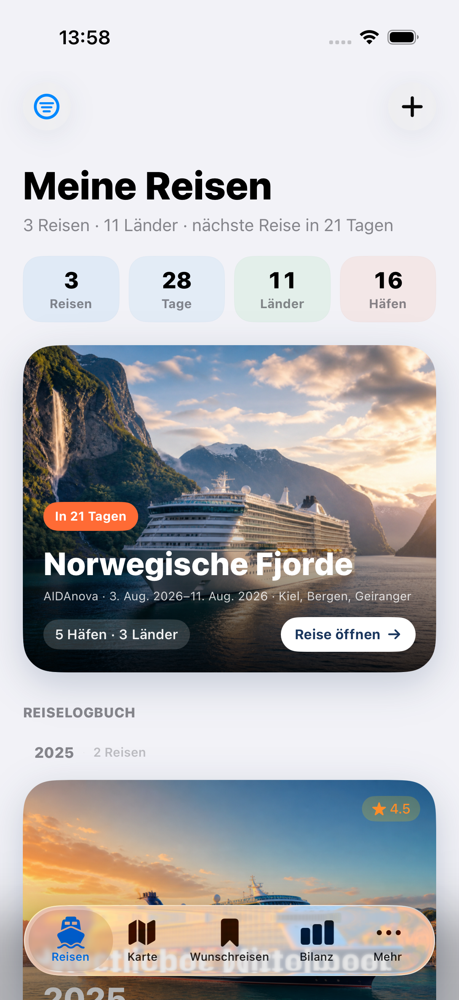

Starkes Fundament.
Vor dem App Store fehlen harte Kanten.
ShipTrip ist heute eine visuell hochwertige, lokale Kreuzfahrt-Archiv-App mit bemerkenswert breitem Testfundament. Die größten Risiken liegen nicht mehr in der Basisarchitektur, sondern in fünf realen Bedien-Dead-Ends, einem Datenverfälschungspfad beim Import, unvollständiger englischer Lokalisierung und einer fehlenden Apple-Privacy-Manifest-Deklaration.
Entscheidung in einem Satz
Was die App heute ist
Eine local-first iOS-App für Kreuzfahrtplanung, Archivierung und Erinnerung – ohne Konto, ohne aktives CloudKit und mit optionaler BYO-Gemini-Erfassung.
| Bereich | Aktueller Nutzerfluss |
|---|---|
| Reisen | CRUD für Reise, Route, Seetage, Hafen-Momente, Fotos, Ausgaben, Bewertung und Notizen |
| Karte | Alle Routen, kurvige Linien, Zoom-Cluster, Rollenmarker, Routenauswahl und Stop-Sheet |
| Wunschreisen | Gespeicherte Angebote mit Preis, Rabatt, Reederei, Zeitraum, URL und Notiz |
| Bilanz | Reisetage, Länder, Häfen, Jahre, Ausgaben und Top-Reedereien |
| Mehr | Darstellung, Gemini-Key, Erinnerungen, ZIP-Import/Export, eigene Reedereien/Schiffe |
| Persistenz | Acht SwiftData-Modelle, app-stabile UUIDs; CloudKit bewusst deaktiviert |

Scorecard
Skala 1–5; qualitative Audit-Einschätzung, kein telemetry-basierter KPI.
Was gut funktioniert
Datenbasis gereift
Stabile UUIDs, Save/Rollback im zentralen Reise- und Importpfad, Kaskaden und echte 5→8-Modell-Migrationstests schließen mehrere alte Datenverlustbefunde.
ZIP deutlich gehärtet
Traversal- und Größenlimits, getrennte Reader/Writer, sichere Pfadauflösung sowie Roundtrip-Tests sind ein großer Fortschritt gegenüber dem Audit vom 3. Juli.
Solides Swift-6-Fundament
Debug- und Release-Simulator-Build sind grün; Services haben klarere Actor-/Sendable-Grenzen, Secrets liegen gerätegebunden in der Keychain.
Karte ist ein Produkt-Highlight
Markerrollen, Kurven, Cluster, Route-Menü und synchronisiertes Stop-Sheet bilden einen erkennbaren, hochwertigen Kern statt einer generischen Map.
Testbreite überdurchschnittlich
260 Unit-Tests in 51 Suites plus funktionale UI-Flows decken Importmanipulation, Migration, Kartenplaner, Reconciliation, Gemini und Custom-Kataloge ab.
Fehlerzustände verbessert
Persistenz-Fallback, Import-/Export-Feedback, Karten-Leerzustände und Notification-Permission-Flow sind sichtbar statt still oder fatal.
Priorisierte Befunde
High = vor breiter Freigabe schließen. Medium = nächster Stabilitäts-/Release-Block. Low = planbare Politur. Alle Aussagen beziehen sich auf Commit 687657c plus den beim Audit sichtbaren, bereits vorhandenen Working-Tree-Zustand.
High
H1Filter ohne Treffer erzeugt einen UX-Dead-End
- Ort
ShipTrip/Views/Cruises/CruiseListView.swift:80–90, 109–113, 252–309- Evidenz
- Bei null Treffern wird nur der Leerzustand gerendert; der Filter-Button lebt ausschließlich in
cruiseList, die Navigationbar ist verborgen. - Auswirkung
- Die Filterkombination kann auf diesem Screen nicht mehr zurückgesetzt werden.
- Empfehlung
- Header/Filter außerhalb des Ergebnis-Branches oder sichtbarer „Filter zurücksetzen“-CTA.
H2Manuelle Hafen-Eingabe verschwindet nach dem ersten Zeichen
- Ort
ShipTrip/Views/Cruises/PortFormView.swift:101–135, 192–207- Evidenz
- Der manuelle Block existiert nur solange
name.isEmpty. Das gebundene Feld macht die Bedingung beim ersten Zeichen falsch; Bestandswerte starten bereits im nicht editierbaren Zusammenfassungszustand. - Auswirkung
- Name, Land und Koordinaten sind manuell kaum zuverlässig erfass- oder korrigierbar.
- Empfehlung
- Expliziten Such-/Auswahlmodus und dauerhaft sichtbaren manuellen Editiermodus trennen.
H3Koordinatenloser echter Hafen wird beim Import zum Seetag und verliert Identität
- Ort
ShipTrip/Services/ExportImportService.swift:355–380und:180–190- Evidenz
exportPort.lat == nilsetztisSeaDay = true– unabhängig vom Namen. Beim nächsten Export wird daraus Name „Seetag“, Landnilund keine Koordinate.- Auswirkung
- Web-/Legacy-Importe mit realen Häfen ohne Geokoordinaten werden semantisch verfälscht; ein Roundtrip macht den Verlust dauerhaft.
- Empfehlung
- Seetag nur aus explizitem Flag bzw. klaren Namen ableiten; „Koordinaten unbekannt“ als eigener Hafenfall testen.
H4Der hervorgehobene Wunschreise-Eintrag kann nicht gelöscht werden
- Ort
ShipTrip/Views/Deals/DealsView.swift:71–90, 94–164- Evidenz
filteredDeals.firstwird als Hero außerhalb des löschbarenForEach(filteredDeals.dropFirst())dargestellt; auch das Formular bietet kein Löschen.- Auswirkung
- Der neueste Eintrag – und bei Suche jeweils der erste Treffer – ist unlöschbar.
- Empfehlung
- Hero/Formular mit einheitlichem bestätigtem Löschpfad versehen.
H5Ganze Reisen lassen sich in der Hauptansicht ohne Bestätigung löschen
- Ort
ShipTrip/Views/Cruises/CruiseListView.swift:141–147, 220–225, 317–322- Evidenz
- Beide Context-Menüs löschen sofort; nur
CruiseDetailView.swift:98–105fragt nach. Zusätzlich wird die Notification fire-and-forget vor einem bestätigtensaveentfernt. - Auswirkung
- Route, Ausgaben und Fotos können durch eine inkonsistente destructive Action irreversibel verschwinden; bei Store-Fehler kann die Reise bestehen bleiben, aber ihre Erinnerung fehlen.
- Empfehlung
- Zentrale Confirm-/Undo-Logik und dasselbe Save-before-side-effect-Muster wie bei „Alle Daten löschen“.
H6Englische Oberfläche fällt in neuen Kernbereichen auf Deutsch zurück
- Ort
ShipTrip/Localizable.xcstrings; Beispiele inCruiseListView.swift:72–74,MapView.swift:103–105,StatsView.swift:50–63- Evidenz
- Der Katalog enthält 185 Schlüssel, doch ein statischer Abgleich findet 68 explizite
String(localized:)-Schlüssel ohne Katalogeintrag, darunter Reiselogbuch, Karten-Leerzustände und neue Custom-Katalog-Texte. DynamischeString-Titel umgehen zusätzlich die Lokalisierung. - Auswirkung
- Die angekündigte DE/EN-App ist in zentralen Flows gemischtsprachig.
- Empfehlung
- Katalog-Extraktion als Build-Gate, fehlende Schlüssel ergänzen, dynamische Titel auf
LocalizedStringKey/lokalisierte Werte umstellen und einen englischen UI-Smoke ergänzen.
H7Apple-Privacy-Manifest fehlt trotz Required-Reason-API
- Ort
- Kein
PrivacyInfo.xcprivacyim Source- oder gebauten Release-Bundle;NotificationService.swift:55–56, 150–152,MainTabView.swift:13,SettingsView.swift:13, 317–319verwenden UserDefaults/AppStorage. - Evidenz
- Apple führt
UserDefaultsals Required-Reason-API und verlangt die Beschreibung im App-Manifest. Für nur app-eigene Werte istCA92.1der naheliegende genehmigte Grund. - Auswirkung
- Release-/Submission-Risiko trotz lokal grünem Build.
- Empfehlung
- Manifest ins App-Target aufnehmen,
NSPrivacyAccessedAPICategoryUserDefaultsmit zutreffendem Grund deklarieren und Archive-Privacy-Report prüfen. Quelle: Apple Required Reason API.
H8Beschädigte ZIP-Backups können als teilweise erfolgreicher Restore erscheinen
- Ort
ShipTrip/Services/ZipArchiveReader.swift:101–123, 158–181;ExportImportService.swift:388–423, 453–461;ExportImportHardeningTests.swift:49–54- Evidenz
- CRC, Local-Header-Signatur, Local-/Central-Name-Konsistenz und vollständige Entry-Anzahl werden nicht geprüft; manche Strukturfehler führen nur zu
break/continue. Der Test-Builder setzt CRC ausdrücklich auf 0, weil der Parser sie ignoriert. Fehlende Medien werden still übersprungen. - Auswirkung
- Ein korruptes Backup kann „importiert“ melden, obwohl Bilder oder Einträge fehlen – genau im Restore-Moment mit höchstem Datenrisiko.
- Empfehlung
- CRC und Struktur vollständig prüfen, bei Abweichung atomar abbrechen und fehlende/ungültige Assets im
ImportResultsichtbar zählen.
Medium
M1„Datenexport“ ist weder vollständig noch vollständig ID-stabil
SettingsView.swift:394–400, 518–524 übergibt nur cruises. Wunschreisen, eigene Reedereien/Schiffe, Ausblendungen und Einstellungen fehlen. Fotos besitzen im Export keine stabile ID; Zeitstempel werden nur teilweise geschrieben und beim Import nicht vollständig wiederhergestellt. UI und Privacy-/Listing-Texte müssen entweder den Scope ehrlich „Reisen exportieren“ nennen oder ein versioniertes Full-Backup aller persistenten Entitäten anbieten.
M3Import/Export können den Main Actor und Gerätespeicher überlasten
ExportImportService.swift:64, 119–164 materialisiert Fotoeinträge und komplettes Archiv; ZipArchiveReader.swift:66–85 akzeptiert bis 550 MB, liest das Archiv und anschließend erneut. Diese Arbeit läuft im Main-Actor-Pfad. Empfehlung: Streaming/Chunking, realistische Limits und nichtisolierte I/O-Pipeline mit Fortschritt und Cancellation.
M4Notification-Einstellungen ändern bereits geplante Erinnerungen nicht
SettingsView.swift:317–365 ändert nur AppStorage. Neuplanung/Entfernung erfolgt erst beim erneuten Speichern einer Reise (CruiseFormView.swift:848–869). Außerdem bietet der Settings-Screen bei .denied erneut einen wirkungslosen Berechtigungsbutton statt „Systemeinstellungen öffnen“.
M5Zwei Hafen-Editoren haben widersprüchliche Datenvalidierung
PortFormView.swift:128–140, 233–235 wandelt deutsche Dezimalkommas still in 0/0 um; CruiseFormView.swift:1061–1065, 1131–1165 erlaubt im zweiten Editor Abfahrt vor Ankunft. Eine gemeinsame Form-/Parser-Logik würde gleichzeitig Validität und Wartbarkeit verbessern.
M6Testlauf ist breit, aber nicht hermetisch
Der vollständige serielle Lauf ließ 26 UI-Fälle grün durchlaufen, scheiterte danach einmal beim Unit-Test-Host-Bootstrap. Der isolierte Unit-Lauf bestand 260/260. Zusätzlich schrieb HauptansichtScreenshotTests.swift:5–20, 283–287 in einen absoluten lokalen Repo-Pfad und überschrieb beim Audit 11 versionierte PNGs; sie mussten zurückgestellt werden. Screenshot-Capture, funktionale UI-Tests und echte visuelle Regressionstests trennen.
M7Keine reproduzierbare CI-/Release-Kette
Kein CI-Workflow und kein Testplan; fastlane/Fastfile:37–50 erwartet eine fertige IPA und baut/testet nicht. Empfohlen: serielles Unit/UI/Release-Gate, gepinnte Fastlane-Version und dokumentierter Archive→Export→Upload-Pfad.
M8Roadmap, Modell-Doku und Store-Metadaten sind erneut auseinander gelaufen
docs/umsetzungsplan-audit-2026-07.md:139–185 führt 1.7.0 und Karten-Bausteine als offen, die CHANGELOG.md:20–94 bereits veröffentlicht. docs/MODELS.md zeigt fünf statt acht Modelle. README/Listing/Privacy nennen alte Versionen, JSON statt ZIP, veraltete „What’s New“-Texte und widersprüchliche App-Namen.
M9Temporärer In-Memory-Store bleibt voll bearbeitbar
ShipTripApp.swift:45–59, 84–102 warnt korrekt, zeigt danach aber die gesamte App auf einem flüchtigen Store. Nach einem einzigen OK können Nutzer neue Daten anlegen, die sicher verloren gehen. Empfehlung: deutlicher dauerhafter Banner plus Schreibsperre/Retry/Supportpfad.
M10Wunschreisen versprechen mehr als die Logik liefert
DealsView.swift:14, 73–75, 109–119 nennt den neuesten rabattierten Eintrag „Beste Option“, ohne Angebote zu vergleichen. Eine gespeicherte URL kann im Anzeige-Flow nicht geöffnet werden (:354–358, 419). Neutral benennen oder echte Vergleichs-/Öffnen-Logik ergänzen.
M11Gemini-Vertrauensfluss ist technisch sicherer als kommunikativ
GeminiService.swift:54–95, 133–155 sendet den gesamten eingefügten Buchungstext an Google; die Importansicht CruiseFormView.swift:1394–1450 erklärt das im Moment der Übermittlung nicht. Beim Key-Wechsel löscht KeychainService.swift:22–39 außerdem zuerst den alten Key; ein Tippfehler oder transienter Validierungsfehler zerstört damit eine funktionierende Konfiguration. Drittanbieterhinweis direkt am CTA und Kandidaten-Key vor atomarem Ersetzen validieren.
Low / Politur
L1Notification-Kernpfad ist nicht end-to-end bewiesen
ShipTripTests/ShipTripTests.swift:582–626 dokumentiert, dass Scheduling/Auslösen nicht wirklich beobachtet wird. Service injizierbar machen; echte Zustellung als Device-Gate.
L2Screenshot-Tests vergleichen keine visuellen Baselines
Neun UI-Methoden erzeugen PNGs, prüfen aber keine Pixel-/Snapshot-Baseline. Der Name „Screenshot-Test“ darf nicht als automatischer visueller Regressionsbeweis gelesen werden.
L3Form-/View-Dateien tragen unnötig viel Änderungsrisiko
CruiseFormView.swift hat 1.488 Zeilen und dupliziert Teile des 487-zeiligen PortFormView; SettingsView.swift hat 660 Zeilen. Nur entlang echter gemeinsamer Validierungslogik teilen, kein abstraktes Großrefactoring.
L4Kleine UX-Lücken
Foto-Ladefehler werden mit try? unsichtbar; Bewertung kann nicht auf „unbewertet“ zurückgesetzt werden; Port-Zero-States sind auf langen Routen sehr groß und kontrastarm.
L5CloudKit-Folgerisiko: einmalige Dedup-Flags
Die aktuelle lokale App ist nicht betroffen. Vor CloudKit-Aktivierung muss geprüft werden, ob einmalige UserDefaults-Flags in ShippingLineCatalogDedup Duplikate aus später eintreffendem Sync noch erkennen können.
Produkt-Realität vs. Produktrichtung
Heute gut belegt
Kreuzfahrt-Archiv, Routenvisualisierung, Hafen-Momente, Ausgaben, lokale Erinnerungen, Wunschliste, Statistiken und optionaler KI-Import.
Noch nicht eingelöst
Der im Projekt gesetzte Kurs „Premium Travel Journal“ verlangt weiterhin Onboarding, Release-Demo, echte tägliche Journal-Einträge/Foto-Captions und einen teilbaren Rückblick. Diese Punkte stehen selbst im Plan B1–B3 offen.
Empfohlene Reihenfolge
P0 · Release-Sicherheit (1–2 Tage)
PrivacyInfo.xcprivacy, Import-Seetag-Klassifikation, unbestätigte Reise-Löschung, Filter-Dead-End, Hafen-Editor und unlöschbarer Hero-Deal. Jeweils Regressionstest.
P1 · Sprach- und Datenvertrauen (2–4 Tage)
String Catalog vollständig, englischer UI-Smoke, Backup-Scope entscheiden, ZIP-CRC/Vollständigkeitsreport, Notification-Settings auf bestehende Requests anwenden.
P2 · Release-Prozess (1–3 Tage)
CI/Testplan, Screenshot-Capture aus dem Test-Gate lösen, Metadaten-/Privacy-/MODELS-/Roadmap-Quellen synchronisieren und kanonische Store-Datei festlegen.
P3 · Produktkurs (1 fokussierte Welle)
Onboarding + releasefähige Beispielreise, danach JournalEntry/Foto-Captions und ein teilbarer Offline-Rückblick. CloudKit erst nach dem bestehenden Zwei-Schritt-Gate.
Verifikation
| Check | Ergebnis | Grenze |
|---|---|---|
| Debug Simulator Build | Bestanden | iOS-26.5-Simulator, Target iOS 18.5 |
| Release Simulator Build | Bestanden | Kein signiertes Device-Archive / kein App-Store-Upload |
| Unit-Tests isoliert | 260/260 in 51 Suites bestanden | Simulator, keine Gerätehardware |
| UI-Tests im Gesamtlauf | 26 ausgeführte Fälle, 0 Fehler | Enthält 8 Launch-Matrix-Ausführungen und 9 Capture-Fälle ohne visuelle Baseline |
Kombinierter xcodebuild test | Fehlgeschlagen | Nach grünem UI-Target: Unit-Host „early unexpected exit“; isolierter Unit-Rerun grün |
| Statische Lokalisierungsprüfung | 68 fehlende explizite Schlüssel | Kein vollständiger manueller EN-Screenwalk |
| Privacy Manifest | Fehlt in Source und Release-Bundle | Kein signiertes Archive-/ASC-Privacy-Report erzeugt |
Nicht durchgeführt: echtes iOS-18.5-Gerät, VoiceOver-/Dynamic-Type-Inspector, Instruments/Memgraph, große reale Fotoarchive, Notification-Zustellung, CloudKit, App Store Connect Live-Metadaten.
Technischer Anhang
Projektkarte
Swift 6 · SwiftUI · SwiftData · MapKit · Charts · PhotosUI · UserNotifications · Security/Keychain · Foundation/Compression. Keine Drittanbieter-Runtime-Abhängigkeiten im App-Code entdeckt.
13.659 produktive Swift-Zeilen · 6.867 Test-Zeilen · 8 persistente Modelle.
Checkout
main · 687657c. Vor Audit vorhanden und nicht verändert: docs/umsetzungsplan-audit-2026-07.md sowie untracked .planning/. Neu durch dieses Audit: nur diese HTML-Datei. Testbedingte Screenshot-Überschreibungen wurden vollständig zurückgestellt.
Geschlossene Altbefunde
Swift-5-Drift, fataler Store-Start, Reise-Edit löscht Portdaten, fehlende Hafenbilder im ZIP, Zip-Slip/grundlegende Bombenlimits, Key im URL-Query, Keychain-Accessibility, hartes EUR im Hauptpfad, Full-Res-Detailgrid und fehlender Karten-Leerzustand.
Restunsicherheit
Der Bericht unterscheidet Codebeweis, Testbeweis und Produkturteil. Externe TestFlight-/App-Store-Zustände wurden nicht live verifiziert; Releaseangaben stammen aus Projektdateien/Commit-Historie.